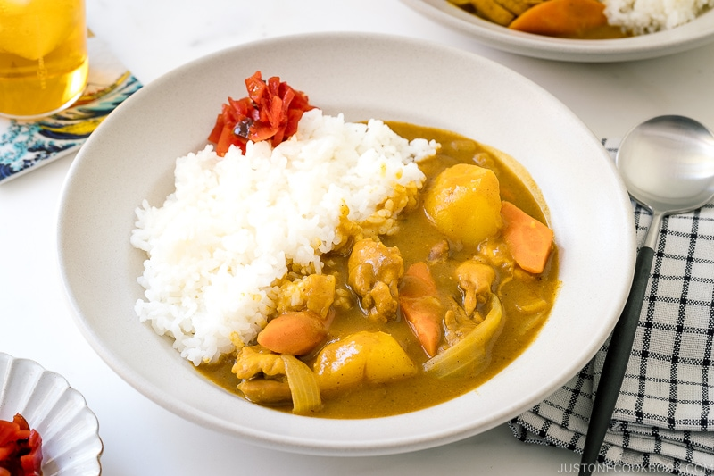

Japanese Chicken Curry
Recipe and description sourced from Just One Cookbook
Description
Japanese curry is a thick curry with a stew-like consistency and commonly includes protein, sweet onions, carrots, and potatoes. The sauce is thickened by a roux (a mixture of fat and flour and an addition of curry spices).
You can find many variations of Japanese curries, ranging from regions to households, but the most basic one uses chicken, which is the recipe I’m sharing here.
Ingredients
- 1½ lb boneless, skinless chicken thigh
- 2 onions
- 2 carrots
- 3 Yukon gold potatoes
- 1 tsp ginger (grated)
- 2 cloves garlic
- ½ apple
- black pepper
For the Curry
- 1½ tbsp neutral oil
- 4 cups chicken stock
- 1 tbsp honey
- 1 tbsp soy sauce
- 1 tbsp ketchup
- 1 package Japanese curry roux
For Serving
- 8 cups cooked jasmine rice
Instructions
- Heat the neutral oil in a large pot over medium heat. Add the onions and saute for 10 minutes, stirring occasionally, until they become translucent and tender. Avoid frequent stirring to caramelize.
- Add the minced garlic and grated ginger. Stir well to combine and release their aroma.
- Add the chicken and cook, stirring frequently, until the pieces are no longer raw on the outside. If the onions begin to brown too much, lower the heat to medium-low.
- Pour in the chicken stock before stirring in the grated apple, honey, soy sauce, and ketchup until well incorporated. Add the carrots and potatoes. The broth should just barely cover the ingredients—additional liquid will be released from the vegetables and meat as they cook.
- Cover and simmer on medium-low heat for 15 minutes, stirring occasionally. If the ingredients are fully submerged, simmer uncovered instead to allow reduction. Once the mixture comes to a boil, skim off any scum from the surface using a fine-mesh strainer. Continue cooking, covered, until a skewer or knife easily pierces the carrots and potatoes.
- Turn off the heat. Add 1 cube of curry roux to a ladle filled with the broth. Stir with a spoon or chopsticks until dissolved, then mix it into the pot. Repeat with the reamin roux until fully incorporated.
- Simmer uncovered over medium-low heat for 5-10 minutes, stirring frequently, until the curry thickens. If it becomes too thick, adjust the consistency with a spash of water. Sitr well to ensure nothing sticks to the bottom of the pot. Serve immediately over white rice.